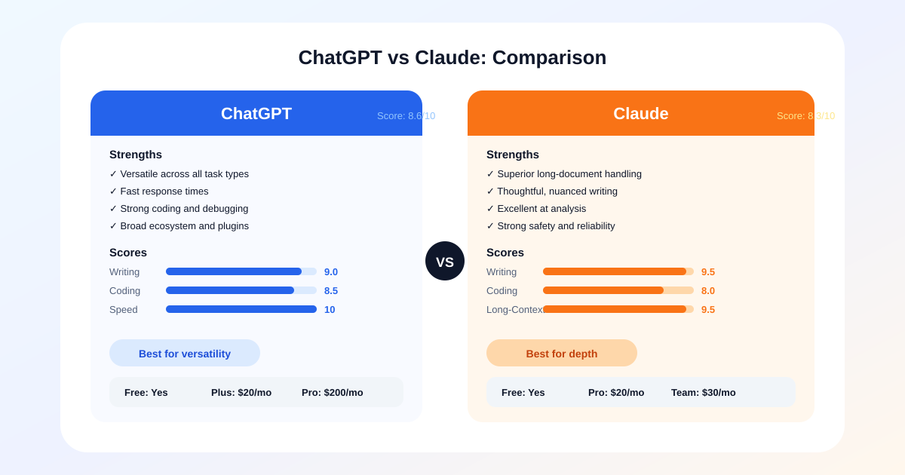

ChatGPT vs Claude: Which AI Assistant is Better?
ChatGPT and Claude are often compared as if one of them must be the universal winner. In practice, they are better understood as two assistants with overlapping capabilities but different personalities in use. Both can help with writing, brainstorming, summarizing, coding, and document analysis. The decision usually depends on which kind of friction you care about most: speed, flexibility, long-document handling, or response style.
For many users, the comparison becomes clearer once you stop thinking in terms of brand preference and start testing real tasks. The best assistant is the one that consistently improves your workflow with the least supervision. That is a higher bar than producing a few impressive answers in a demo chat.
| Tool | Free Tier | Paid Plan | Best For |
|---|---|---|---|
| ChatGPT | Yes (GPT-4o limited) | $20/month Plus | Versatile tasks & coding |
| Claude | Yes (limited) | $20/month Pro | Long-form & analysis |

At a Glance: ChatGPT vs Claude
- ChatGPT (8.6/10) — Best all-around assistant for versatility, speed, and broad task coverage
- Claude (8.3/10) — Best for long-form writing, document analysis, and thoughtful revision work
- Both offer free tiers — ChatGPT Plus is $20/month and Claude Pro is $20/month, so test your actual workflow before committing
The big-picture difference
ChatGPT generally feels broader and more tool-like. It is good at switching contexts, generating structured output quickly, and acting as a general-purpose assistant for people who move between writing, planning, research, and technical tasks. It often rewards users who are comfortable steering the conversation and refining prompts.
Claude often feels more measured. It is particularly strong when you need to work through long documents, preserve nuance, or receive cleaner synthesis from supplied material. Many users prefer it when the task requires careful reading and thoughtful rewriting rather than rapid-fire idea generation. That does not make it slower in a negative sense. It means the interaction style often feels calmer and more document-aware.
ChatGPT Strengths
- Fast response times across all task types
- Strong code generation and debugging
- Broad plugin ecosystem and integrations
- Excellent for brainstorming and ideation
Claude Strengths
- Superior long-document understanding
- More nuanced and careful writing style
- Excellent at synthesis and analysis
- Strong safety and reliability record
Detailed Score Comparison
Scores shown for ChatGPT. Claude scores: Writing 9.0, Coding 8.0, Research 8.5, Long-Context 9.5, Speed 7.5, Value 9.0.
Writing and research workflows
For quick drafting, idea expansion, and structured brainstorming, ChatGPT is usually the easier starting point. It can generate outlines, headlines, summaries, and content variants with very little setup. Writers who need one assistant that can move from topic ideation to article scaffolding to social promotion copy often appreciate that range. For a dedicated look at the top options, see our best AI writing tools guide.
Claude tends to shine later in the editorial process. If you already have source material, interview notes, or a rough draft, it often does a strong job of restructuring content while keeping the original meaning intact. This matters for teams producing guides, reports, and document-based content where subtle changes in tone or logic can create downstream editing costs.
For research support, both tools can be useful, but the best one depends on how you work. If you want fast synthesis from small inputs and flexible follow-up questions, ChatGPT is highly effective. If you want to upload a large document and work through it with less conversational drift, Claude may feel more dependable.
Neither tool should replace direct source verification. In editorial workflows, the assistant should help organize and clarify material, not silently become the source of truth.
Coding and analytical tasks
For coding, ChatGPT often has the edge when you need breadth across debugging, code generation, planning, and iteration. It handles general programming support well and can move between explanation and implementation quickly. Developers who use an assistant in short bursts throughout the day may prefer that style because it keeps momentum high. Compare more options in our best AI coding assistants ranking.
Claude can still be very capable for coding, especially when you need careful reasoning over larger chunks of context. Its value increases when the task is less about generating a quick snippet and more about analyzing structure, reading documentation, or working through a complex code explanation in a steady way. Some developers also prefer its tone when reviewing or refactoring code because it can feel less eager to overproduce.
For analytical writing, planning, and synthesis, both are strong enough that the difference often comes down to trust in the output style. If you want a more expansive and tool-oriented assistant, ChatGPT may be the better default. If you want an assistant that feels especially comfortable with long passages and careful summary, Claude is often the better fit.
| Feature | ChatGPT | Claude |
|---|---|---|
| Free Tier | ✓ GPT-4o-mini | ✓ Haiku |
| Individual Plan | $20/month (Plus) | $20/month (Pro) |
| Team Plan | $25/user/month | $30/user/month |
| Context Window | 128K tokens | 200K tokens |
| Best For | Versatility, speed, plugins | Long documents, analysis |
Usability, ecosystem, and pricing
Usability is where personal preference matters more than benchmark culture admits. ChatGPT benefits from a broad ecosystem and a flexible interface that supports many kinds of tasks. It is attractive to users who want one assistant to cover a wide range of work, from content creation to technical questions to planning and ideation.
Claude’s appeal is different. Users often choose it because it feels strong with long-context document work and because the interaction quality can feel more stable for reflective tasks. If your day revolves around research notes, policy drafts, long-form writing, or dense documentation, that difference is meaningful.
Pricing and plan structure should be evaluated against your actual usage pattern, not raw subscription cost. A slightly more expensive plan can still be the better value if it reduces editing time, context switching, or rework. The wrong comparison is monthly fee versus monthly fee. The right comparison is total time saved versus total supervision required.
Who should choose which?
Choose ChatGPT if you want the most versatile all-around assistant, especially if your work jumps between writing, brainstorming, coding, and everyday problem solving. It is a strong choice for users who like directing the model rather than relying on fixed templates.
Choose Claude if you work heavily with long documents, care deeply about clarity in rewrites, or prefer an assistant that feels especially useful during analysis and editorial refinement. It is often a better fit when nuance preservation is more important than raw speed.
The most practical conclusion is that neither tool fully replaces the other for every user. If you only want one, choose based on your dominant workflow. If writing and general productivity are spread across many task types, ChatGPT is usually the safer default. If document-heavy analysis and careful refinement dominate your work, Claude is often the better specialist.
Related Articles